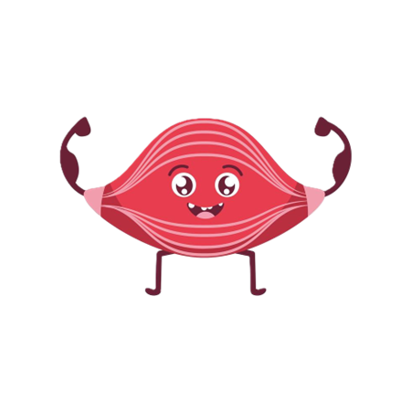

Molti muscoli volontari, come quelli delle braccia e delle gambe, lavorano in coppia: quando un muscolo si contrae l’altro si distende, e viceversa. Questi tipi di muscoli, che permettono movimenti opposti, sono detti antagonisti.
I muscoli per funzionare necessitano di energia, che ricavano dalla degli alimenti, in particolare dagli zuccheri e dall’ossigeno.
I tessuti muscolari sono attraversati da vasi sanguigni e il sangue, infatti, ha il compito di rifornire le fibre muscolari di nutrimento, ossigeno e di portare via l’anidride carbonica. Se durante il movimento i muscoli non ricevono abbastanza ossigeno, si produce acido lattico, che causa indolenzimento.
Per questo è importante la respirazione quando si pratica sport.
Ad esempio se solleviamo il braccio verso la spalla il bicipite si contrae, si accorcia e fa muovere l’osso collegato, tirandolo verso di sé. Contemporaneamente il tricipite si rilassa. Seabbassiamo il braccio avviene il contrario. Proprio perché nel movimento il bicipite e il tricipite compiono azioni contrarie si dicono muscoli antagonisti.